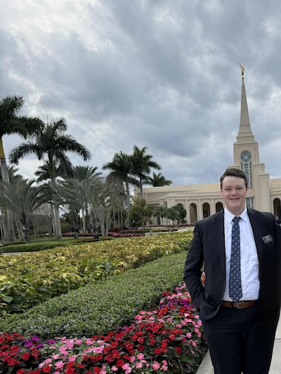

Rudy Lindsay | WDD 130
Hi, my name is Rudy Lindsay. You clicked on my website. I am currently living in the Philippines as a Service Missionary. I'm enjoying learning about coding and website programming. I am excited to see what I can learn in WDD130, I love the Philippines so far, the people here are so nice. I have worked as a proselyting missionary in the Utah Provo Mission. I loved serving there and have all kinds of stories from my time there. I loved the people that I met, and loved the conversations I had with other missionaries, as well as converts, members, people who were interested in hearing the gospel, and even people who weren't interested in hearing the gospel. I was reassigned to a service mission in the Fort Lauderdale Florida Service Mission. I loved my companions as well as teh people I served there, and the people I served with. I worked with a couple of charities to try to better life for those living in SouthWest Florida, I also made weekly trips to the temple as an ordinance worker. I worked as a service missionary in Fort Lauderdale Florida until I was reassigned when my parents were called as Mission Leaders in the Philippines Cauayan Mission, where I now serve.